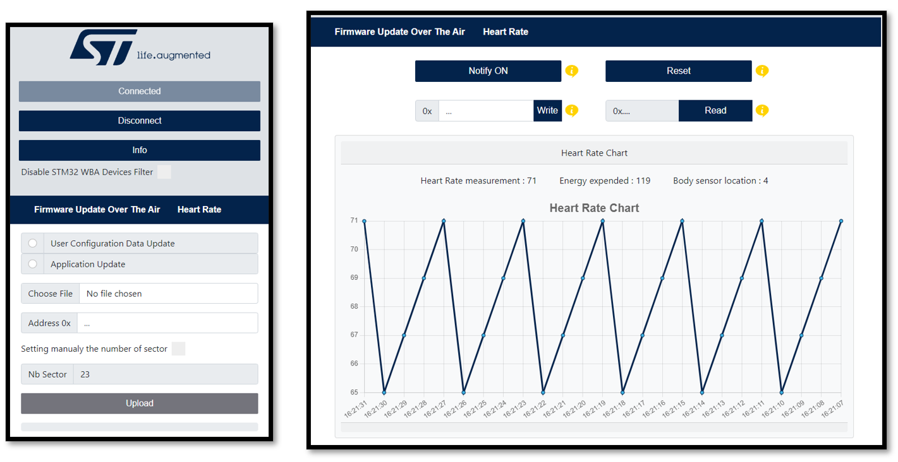
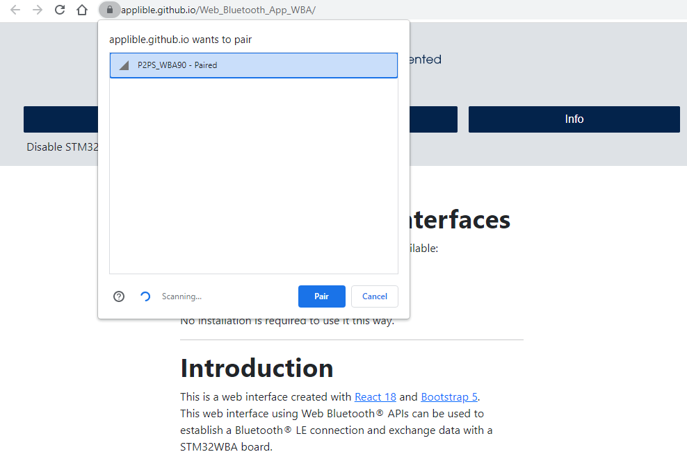
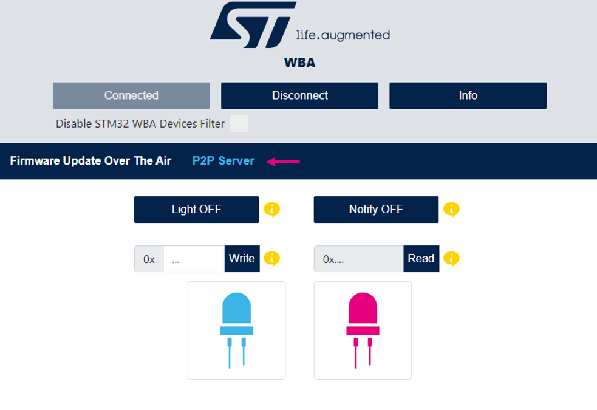
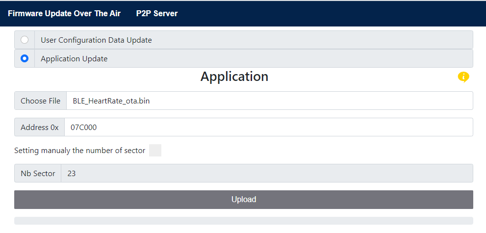
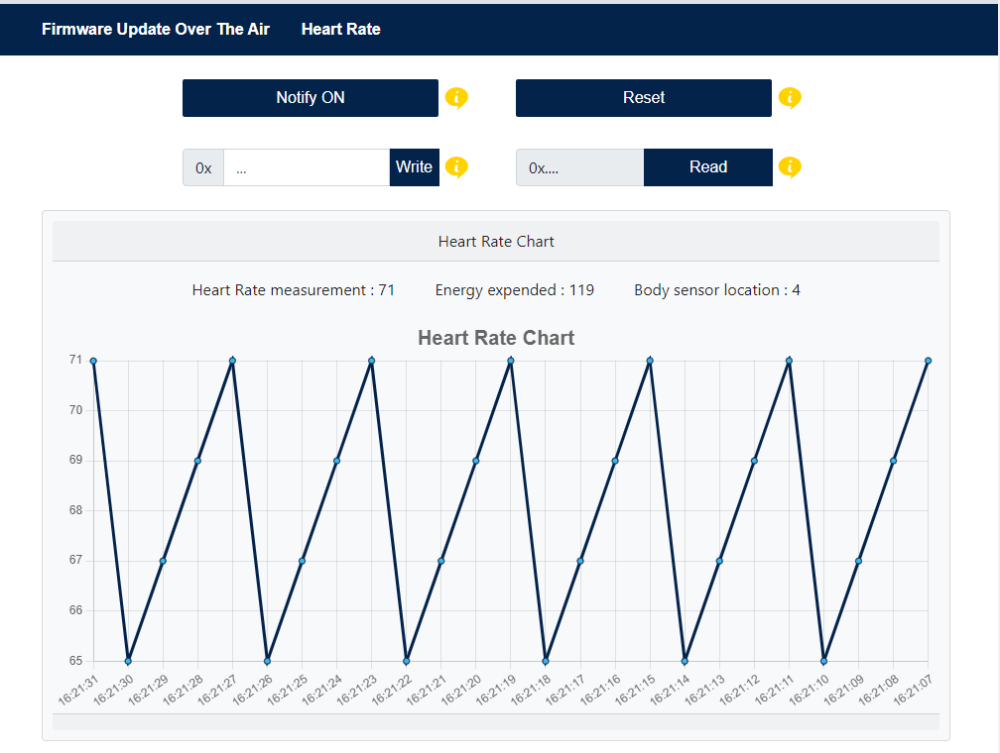
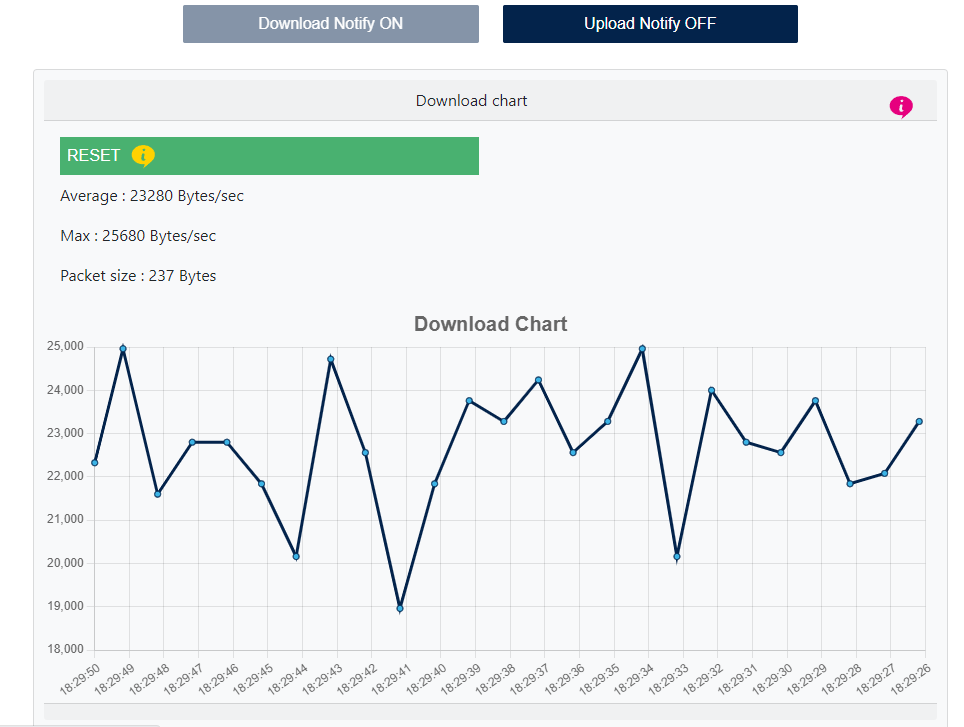
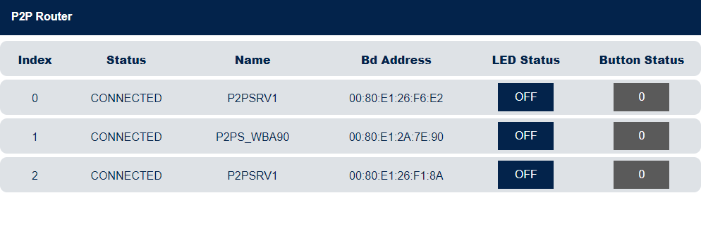
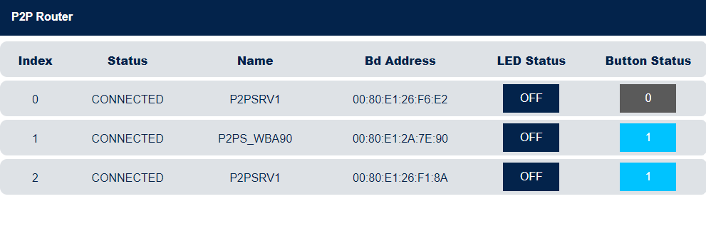
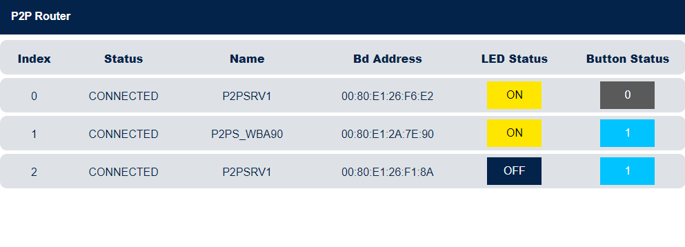
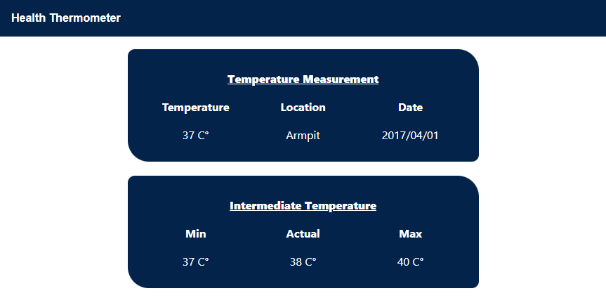

Two github pages hosting the web app are available:
No installation is required to use it this way.
This is a web interface created with React 18 and Bootstrap 5.
This web interface using Web Bluetooth® APIs can be used to establish a Bluetooth® LE connection and exchange data with a STM32WBA board.
Here is the list of STM32WBA applications supported by this Bluetooth® web application:
Example of the interface when a connection is established with Firmware Update Over The Air application and HeartRate application 
The following wiki page will help you to put in place the hardware setup.
To use the web interface, the following STM32WBA board is necessary .
A PC or a smartphone is required to open the web interface in a browser.
For more information about STM32CubeWBA Software Architecture click here.
Refer to UM2237 to learn how to install and use STM32CubeProgrammer.
For more information about Bluetooth® LE please refer to the STMicroelectronics Wiki.
The P2P Server application demonstrates a bidirectional Bluetooth® LE communication between a client and a server. The P2P Server interface proposes a set of buttons to interact with the connected device. A reboot panel is available only if a P2P Server service with the reboot OTA characteristic is detected on the device (see the Firmware Update Over The Air section to have more information related to OTA).
Example with the NUCLEO-WBA52 board.
The p2pServer binary file has to be flashed in the microcontroller.
Step 1. Power on the STM32WBA board with the P2P Server application flashed in and activate the Bluetooth® on your machine.
Step 2. Open this web page in your browser.
Step 3. Click on the connect button then select P2PS_WBAxx in the device list and click pair.

Step 4. Click on P2P Server to show the interface and don't hesitate to read the tooltips.
Your are now connected.
You can now interact with the connected device.

For more information about this application, please refer to STM32WBA P2P Server.
The Firmware Update Over The Air (OTA) application allows a remote device to update the current application.
Example with the NUCLEO-WBA52 board.
The BLE_ApplicationInstallManager application, associated to a Bluetooth® LE application embedding OTA service, manages the firmware update over the air of a Bluetooth® LE application.
The BLE_ApplicationInstallManager application must run with Bluetooth® LE applications embedding OTA service like: BLE_HeartRate_ota or BLE_p2pServer_ota applications.
BLE_ApplicationInstallManager is loaded at the memory address 0x08000000. BLE_HeartRate_ota or BLE_p2pServer_ota application is loaded at the memory address 0x08004000.
Step 1. Power on the STM32WBA board with the Ota application flashed in and activate the Bluetooth® on your machine.
Step 2. Open this web page in your browser.
Step 3. Click on the connect button then select your device list and click pair.
You are now connected
Step 4. Choose between updating the User Configuration Data and the Application.
Step 5. Select the binary to be downloaded.
Step 6. (Not mandatory) Choose the first sector address from which the file will be write.
Step 7. Click on the upload button and wait for the disconnection.

Congratulations, the new Application/Wireless stack is running and can be connected
For more information about this application, please refer to STM32WBA FUOTA.
The HeartRate application measures heart rate data and other information like the body sensor location and the energy expended. The HeartRate interface proposes a set of buttons and text input to interact with the connected device and a chart displaying the heart rate data received. A reboot panel is available only if a HeartRate service with the reboot OTA characteristic is detected on the device (see the Firmware Update Over The Air section to have more information related to OTA).
Example with the NUCLEO-WBA52 board.
The Heart Rate binary file has to be flashed in the microcontroller.
Step 1. Power on the STM32WBA board with the HeartRate application flashed in and activate the Bluetooth® on your machine.
Step 2. Open this web page in your browser.
Step 3. Click on the connect button then select HRSTM in the device list and click pair.
You are now connected
Step 4. Click on HeartRate to show the interface and don't hesitate to read the tooltips.
You can now interact with the connected device.

For more information about this application, please refer to STM32WBA Heart Rate.
The Data Throughput application measures the upload (data transfer from web interface to the connected device) and download (data transfer from the connected device to the web interface) throughput between the web app and the connected device. The Data Throughput interface proposes two panels, one to display the uploaded data and the other the downloaded data. Each panel has a chart of the data throughput and a button to reset the chart, the upload panel has also a button to start or stop the uploading of data.
Example with the NUCLEO-WBA52 board.
THe Data Throughput binary file has to be flashed in the microcontroller.
Step 1. Power on the STM32WBA board with the Data Throughput application flashed in and activate the Bluetooth® on your machine.
Step 2. Open this web page in your browser.
Step 3. Click on the connect button then select DT_SERVER in the device list and click pair.
You are now connected
Step 4. Click on Data Throughput to show the interface and don't hesitate to read the tooltips.
You can now interact with the connected device.

For more information about this application, please refer to STM32WBA Data Throughput.
The P2P Router application demonstrates STM32WBA acting at the same time as both: Bluetooth® LE central and peripheral, GATT server and client.
P2P Router application scans to connect to P2P Server devices and accept connection of ST Web Bluetooth® app. It will route Bluetooth® LE messages received from both side.
Example with one NUCLEO-WBA52 board as a P2P Router, two NUCLEO-WBA52 and one P-NUCLEO-WB55 boards as P2P Server.
You need a P2P Router running on a STM32WBA52 and at least another STM32WBAxx / STM32WB Nucleo board to run a P2P Server application.
Step 1. Power the board with the P2P Router application flash and the others boards running the P2P Server apps.
Step 2. Activate the Bluetooth® on your machine.
Step 3. Open this web page in your browser.
Step 4. Click on the connect button then select P2PR_WBAxx in the device list and click pair.
You are now connected
Step 5. Click on P2P Router to show the interface and click the Start button.
You can now interact with the connected device.
Step 6. Power up to 7 P2P Server devices next to P2P Router device.
Step 7. On each click on B1, P2P Router will scan and then connect to a P2P Server device surrounding.
Step 8. On the Web Bluetooth® interface you can see devices appearing.

Step 9. On P2P Server device, a click on B1 send a notification to P2P Router.
This notification message is forwarded to the smartphone and displayed on the interface.

Step 10. On Web Bluetooth® interface click the Light button to write a message to the corresponding P2P Server devices. This write message is sent first to P2P Router and then routed to its destination.

For more information about this application, please refer to STM32WBA P2P Router.
The Health Thermometer Profile is used to enable a data collection device to obtain data from a thermometer sensor that exposes the Health Thermometer Service.
This specification is compatible with any Bluetooth® core specification host [3] that includes the Generic Attribute Profile (GATT) specification and the Bluetooth® Low Energy Controller specification.
Example with the NUCLEO-WBA52 board.
The Health Thermometer binary file has to be flashed in the microcontroller.
Step 1. Power on the STM32WBA board with the Health Thermometer application flashed in and activate the Bluetooth® on your machine.
Step 2. Open this web page in your browser.
Step 3. Click on the connect button then select HT_xx in the device list and click pair.
You are now connected
Step 4. Click on Health Thermometer to show the interface.

For more information about this application, please refer to STM32WBA Health Thermometer.
Caution : Issues and the pull-requests are not supported to submit problems or suggestions related to the software delivered in this repository. This example is being delivered as-is, and not necessarily supported by ST.
For any other question related to the product, the hardware performance or characteristics, the tools, the environment, you can submit it to the ST Community on the STM32WBA MCUs related page.